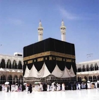

Рисале-и Нур — көрүнүктүү Ислам аалымы Бедиуззаман Саид Нурсинин 1926-1949-жылдар арасында жазган 14 томдон турган көлөмдүү эмгектери. Арапчадан которгондо «Нурдуу китепчелер» деп которулуп, жалпысынан 130 китепчелерден турат. Ыйык Куранга, ыйман негиздерине каршы багытталган динсиздердин, философтордун бардык суроолоруна таамай жооп берген куттуу Курандын нурдуу тафсири…

"Ислам дини - Күн сыяктуу, үйлөө менен өчпөйт.
Күндүз сыяктуу, көз жумуу менен караңгы болбойт.
Ким көзүн жумса ал өзүнө гана караңгылык кылат".
(Тарихче-и Хаят 80-бет)
"Акыйкат бирөө. Кайсы эшиктен кирсең да анын өзүн гана көрөсүң."
(Мухакемат 111-бет)
"Эгер биз Ислам дининин адеп-ахлактарын жана
ыйман акыйкаттарынын жеткилеңдигин иш жүзүндө жүзөгө ашыра алсак,
башка диндердин адамдары албетте жамааттары менен Ислам динине киришет.
Балким жер шарынын кээ бир материктери менен өлкөлөрү да Исламга киришет."
(Tарихче-и Хаят 90-бет)
Европалыктар өсүп-өнүгүүдө келечекти көздөй учуусу менен бизди материалдык жактан орто кылымдарга калтырган алты «оору»:
(«Хутба-и Шамийе» китебинен)
Эй, бул мекендин жаштары! Батышты туурабагыла! Европанын силерге кылган чексиз
зулумдугу менен душмандыгынан кийин кайсы акылыңар менен алардын бузуку жана жалган
пикирлерин ээрчип, аларга ишенип жатасыңар? Жок! Жок! Бузукулук менен аларды туурагандар,
аларды жөн гана ээрчип баратышпайт, балким өздөрү түшүнбөстөн алардын катарына кошулуп,
өзүңөрдү жана бир туугандарыңарды өлтүрүп жатышат. Ойгонгула! Силер уятсыздык менен
аларды ээрчиген сайын, ар-намысыңарга жалганчылык кылып жатасыңар! Анткени,
аларды ушинтип эрчип кетүүңөр, эли-журтуңарды сыйлабастык жана маскаралоо болуп саналат!
هَدَينَا اللّٰهُ وَ اِيَّاكُمْ اِلَى الصِّرَاطِ الْمُسْتَقِيمِ
(17-Леманын 5-эскертүүсү)
Динге кызмат кылган адам жалгыз гана Аллах тааланын ыраазылыгын алуу үчүн кызмат кылышы керек. Амалдарында мындан башка эч кандай пайданы ниет кылбайт. Ыкластын терси РИЯ (Эл көрсүн деген амал) менен СУМЪА (Эл уксун деген амал) болуп эсептелет. Бул болсо, хадистерде айтылгандай «Жашыруун ширк» болуп саналат. (Tирмизи, Назир, 9; Ибн Маажа, Фитан 16)
Рисале-и Нурдун жолу – ыклас жолу. Анткени, куткарылуу жалгыз гана ыклас менен болот. Куран кызматындагы ийгиликтин жана макбулийеттин руханий сыры ыкласта. Устат Бедиуззаман Рисале-и Нурдун эң чоң күч-кубаты ыклас болгондугун баяндайт. Бул максатта 20-жана 21-лемаларды жазган. Башына: «Эң аз 15 күндө бир жолу окулуп турулсун» деген эскертүүсү, устатыбыздын ыкласка канчалык маани бергендигин көрсөтүп турат.
БИРИНЧИ ЭРЕЖЕ: Ар бир амалыңар-дагы ниетиңер Аллахтын ыраазылыгы гана болсун. Эгер Ал ыраазы болсо, бүткүл дүйнө нааразы болсо да эч кандай мааниси жок. Эгер Ал кабыл кылса, башка эч ким кабыл этпесе да, эч кандай таасири жок. Ал ыраазы болуп, кабыл эткенден кийин, кааласа жана Ал Өзү ылайык көрсө, силер каалабасаңар дагы, аларга кабыл кылдыртып, аларды да ыраазы кылат. Ошондуктан, бул кызматта түздөн-түз жалгыз гана Аллахтын ыраазылыгын негизги максат кылуу керек.
(21-лемадан)
Урматтуу, кунт койгон тууганым! Биз адамдардын урмат-сый көрсөтүүлөрүнөн, жеке өзүбүзгө таандык болгон ХУСНУ ЗАНН, ИКРАМ жана жакшы көрүүлөрүнөн олутту түрдө качабыз. Айрыкча, таң калыштуу риякорлук болгон атак-даңкты сүйүү жана өзүнө тартып туруучу өзүмчүлдүк менен тарыхтарда калуу жана адамдарга жакшы көрүнүү болсо, Рисале-и Нурдун эрежеси жана жолу болгон Ыкласка таптакыр карама-каршы келет. Аны каалоо эмес, тескерисинче андан үркүп турабыз. Тек гана Курандын фейзинен келген, руханий мужизасынын жарыгы, акыйкаттарынын тафсири болгон жана сырларын ачкан Рисале-и Нурдун элге таанылуусун, ар бир адамдын ага муктаждыгын сезүүсүн, анын кымбат баалуулугун түшүнүүсүн, руханий кереметтерин жана ыйман көз карашында бүтүндөй динсиздикти жеңилүү ызаасын таттыргандыгын жана аларга үстөмдүк кыла турганын билдирүүнү жана көрсөтүүнү каалайбыз. Ошондой эле аны Алланын ырайымынан күтөбүз…
(Тарихче-и Хаят, 511-бет)
Рисале-и
Нур окуу